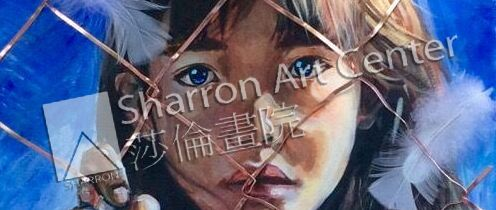

深圳学生林宛澄获奖自述
2013年4月，我从深圳来到美国新州读十年级。我从小就喜欢画画，一兴奋就会拿起笔，悲伤的时候也会以作画来宣泄，但让我真正意义上接触艺术还是从来美国后的第二个月，也就是2013年5月在莎伦画院开始学习算起。第一次拿着我的画跟莎伦院长面试时，莎伦院长就跟我说画家和画匠的区别，要我先夯实基本功再创造作品。刚开始，莎伦院长让我从最基本的素描开始学习，为此我心里挺着急，担心从素描开始学习会浪费时间，但莎伦院长教导我耐心，踏实。为了尽快学好，我主动要求加课时，别人每周到莎伦画院学2小时，我就学4小时。很多人认为连续画4个小时的素描该有多枯燥，我却认为这4个小时不仅训练我的画技，而且培养了我的静心。2015年一月份，我结束了一年多的素描基础训练， 开始画油画。在莎伦老师的教导下，我进步很快。2014年底，莎伦老师鼓励我参加比赛。2015年1月我创造的连环漫画作品《Mirror》参加了2015 年Scholastic Art & Writing Awards（艺术和写作比赛）。这次比赛新泽西赛区共有1100多个学生提交了3700多副参赛作品，我的漫画入选新泽西州Top 7%，并获得了新泽西州漫画金奖。这幅作品花了我差不多两个月的课余时间进行创造，周五晚上到周日晚上常琢磨漫画的细节、故事情节和台词到凌晨两三点，家人看到我经常熬夜想让我放弃，但我坚持完成这幅近70副小图共八页A4纸的作品。
2015年3月我创造了一副油画《Freedom and Hope》参加了2015年春季Celebrating Art美国优秀学生作品画册比赛，获得了北美洲Top 10 Winners的荣誉。这幅画的创作灵感来自我当时内心的彷徨和束缚感。十一年级下半学期正是高中最紧张的时期，要应付AP和SAT考试，要参加学校田径俱乐部，要做少儿足球助教义工活动，但还有很多我想要去做的事情却因为没有时间而被迫舍弃。英语对刚来不到2年的我来说也是个大难关，内心的压力堆积让我有种想要挣脱的感觉。但转念一想，苦尽甘来甜更甜！如今的挣扎正是为了以后能更自由地飞上蓝天，而我花四个小时一点点把铁丝贴在画上的过程就像是在考验我的耐心，这几片羽毛不是在笼子里面而是在笼子外面，并且女孩眼睛以及天空都是非常明亮的蓝色，这幅画也让我对未来的生活充满了无限的憧憬和希望。在创造这幅画的过程，莎伦院长给了我很好的建议，突出了这幅作品的立体感。
在莎伦画院学习绘画，我的画技突飞猛进，自信心也增加很多。今年我尝试将自已课外时间画的作品发布在instagram上，被一个名为“深圳校服在海外”的非盈利线上活动组织聘为插画师，其中的一副我画的深圳校服的漫画被中国腾讯视频采用，中央电视台做了转播⋯
谢谢莎伦老师和莎伦画院，发掘了我的潜力，我会继续在艺术的道路上不断探索。（2015）